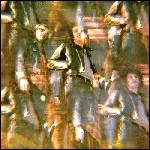

Nude Beach II
(Other Music Recording Co.)
It makes sense that the three guys who make up Nude Beach began their formative musical careers jumping around between upstart DIY punk bands in New York, as the songs that comprise their new LP II seem to have the kind of loose, frenetic energy that punk rock wears like a badge of honor. And even if they don’t care to admit it, the staunchest of punk rockers owe a great debt to early pop giants like The Beach Boys and The Beatles. In fact, I would say that you can tie almost any genre back to its pop roots through a decades-long sequence of guitar lines, vocal melodies, and instrumental structure. What makes Nude Beach stand out from their punk rock aesthete peers is their knowingness and acceptance of their place in this musical lineage and, of course, their ability to successfully manipulate familiar musical touchstones into something that feels wholly recognizable but also completely their own. I can imagine the band standing around some musical cauldron like the witches in MacBeth, tossing in random pieces of songs—a guitar riff from Tom Petty, the thumping toms of The Hold Steady, and the angular tweaks of X. Who says pop music can’t be all inclusive?
II starts out appropriately enough with Radio, a mixture of pop rock staples that recalls the jangle-pop of Big Star and the ringing melodies of Cheap Trick. There is also more than a faint trace of Modern English’s I Melt With You thrown across this track. It may just be that initial guitar sound, but I’ll be damned if it’s not at least some distant cousin. And far from being just an empty retread, the band does manage to infuse the whole proceeding with the punk DIY temperament that they cultivated in their early career. From this point the album never veers from its full-speed-ahead course, diving into sound after sound, throwing everything at the listener, and drawing us along in its wake. Songs like Walkin Down The Street and The Endless Night mine that much abused cache of punk rock that would eventually give us The Strokes, for better or worse. The guitars chime, the vocals race, and you can clearly see the bands worn copy of My Aim Is True sitting in the corner. Then there’s Keep It Cool, an odd song that sounds like nothing so much as X covering Wayne Cochran’s Last Kiss. I expect to hear them yell “…Adult Books!” at any moment. The whole endeavor might have come across as disingenuous if the end result didn’t feel so determinedly euphoric. They make no excuses for their own influences and in fact wear them so closely to their hearts that the blissed-out energy which surges forth from these songs is as infectious as it inclusive. I would say that Tom Petty probably deserves some royalties for Love Can’t Wait, as much a “Tom Petty” song as you’re likely to hear in a year without a release by him and the Heartbreakers. The songs continue to fire off at a rapid clip with ideas and melodies jumping in and out at a moment’s notice. Get in, get out—pop’s trademark signature. But far from being too much, too soon, Nude Beach make our anticipation of the next recognizable sound part of the albums appeal.
If I had a concern, it would be that this kind of album seems destined to be heard as just an amalgamation of the bands influences, and therefore, somewhat insular to some. This is in spite of the albums overwhelming want to please. There is so much room to move within these songs that the band seems to be playing it safe by utilizing these common musical reference points. That being said, the creative spark is well lit. Nude Beach just need to step out of the shadow of their influences a bit more next time. It’s all well and good to craft an excellent and propulsive homage to your idols, but to stand on their own, we need to hear more of the band themselves and less the ideas of how their influences have shaped them. Not that there’s anything necessarily wrong with that. I see a reckless drive within this band to incorporate as many of their influences as possible, and in light of pop music’s continued homogenization, bands like Nude Beach are sorely needed.
On II, the band is able to find that middle ground between the acceptance of pop music’s limitations and its emotionally resonant core. What we get is a lean 32 minutes of pure musical influence. We’ve already had great examples of this kind of genre misappropriation with albums this year by Twin Shadow and Frankie Rose, though not quite to the extent that we find on II. It’s a testament to their ingenious crafting of familiar sounds that we hear the musical reference points in each of these songs without feeling cheated by the fact that we can pinpoint precisely who they sound like at any given moment. I can see how some people might claim plagiarism but their love of the music of which they are so obviously fans keep these songs from becoming bogged down through an over reliance on another artists’ talent. They’re really only copying the spirit of their idols and not just using them as musical crutches. When was the last time you got to hear all your favorite artists on a single album? Go ahead and raise your hand now.
26 July, 2012 - 06:17 — Joshua Pickard